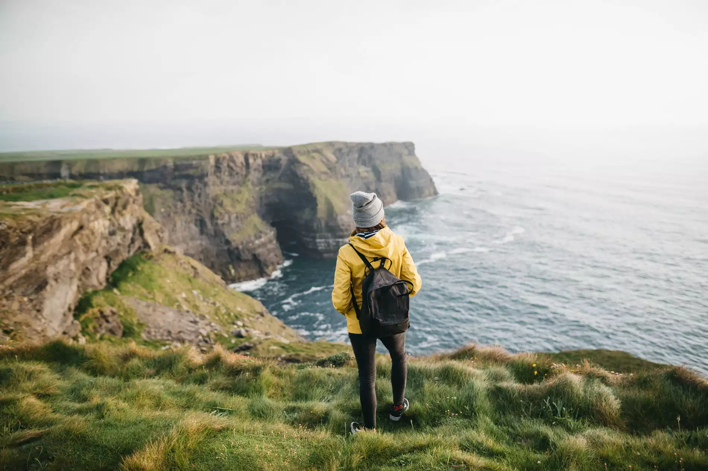
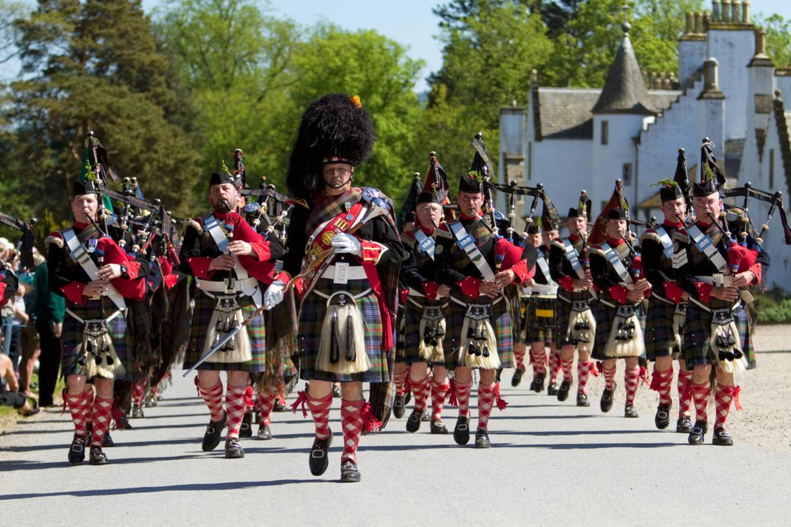
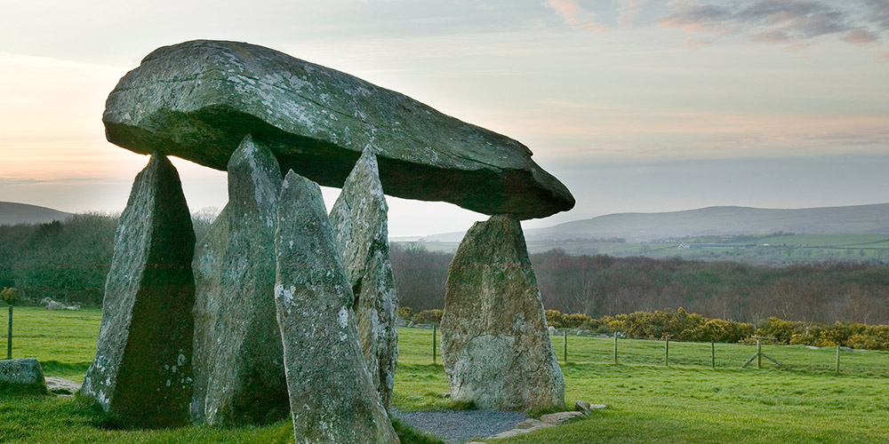

Découvrez la culture celtique à travers les 4 nations majeures du monde celtique.
Dévoilez ces nations en cliquant sur les feuilles de l'arbre.
La Bretagne
Péninsule française, mais avant tout celtique
la Culture bretonne au sens large, c'est-à-dire aussi bien de la culture dite celtique, principalement en
langue bretonne, présente essentiellement en Basse-Bretagne (Bretagne occidentale) et dans une moindre mesure en
Haute-Bretagne (Bretagne orientale) où domine la culture des régions romanes de langue gallèse.
Le breton ou brezhoneg et le gallo ne sont pas des langues en état de léthargie, assistés pour survivre. Au
contraire, la culture bretonne dans sa totalité connaît une existence ancrée en plein dans le présent et ouverte
sur le futur. Le Festival Interceltique de Lorient et les festoù noz, entre autres, ont su maintenir la culture
bretonne dans une actualité dynamique.
Par le passé l’Armorique a été peuplée par les tribus celtes qui ont laissé leurs noms à plusieurs cités
(Vénètes à Vannes, Redones à Redon, Namnètes à Nantes …). Les Bretons de Grande-Bretagne chassés par les Angles
et les Saxons viennent ensuite s’installer en Armorique en grand nombre et donnent un nom à leur nouveau pays.
Ils apportent le catholicisme irlandais et forment des paroisses (plou), des ermitages (loc), des abbayes (lan),
toujours présentes dans la toponymie bretonne.
Culture musicale
Biniou kozh-bombarde, accordéon, bagad et chants de marins
La musique bretonne est l'expression musicale de la Bretagne. Sous ses formes traditionnelles instrumentales
(biniou kozh-bombarde, accordéon, etc.), elle incorpore des instruments nouveaux (flûte traversière en bois,
guitare, etc.). Ses formes d'expression sont aujourd'hui très diverses (musique à danser, musique de concert,
bagadoù, concours musicaux, etc.).
Pendant longtemps, la musique bretonne s'est partagée entre la musique festive (accompagnement des danses), la
musique descriptive ou de circonstance (mélodies, marches ou airs accompagnant le travail) et la musique
religieuse (kantikou brezhoneg). La chanson bretonne rassemble des chants à danser (kan ha diskan en Centre
Bretagne, chant à répondre ailleurs), des chants à écouter (gwerzioù et complaintes), des chants populaires, des
cantiques et des chants de marins. La musique et le chant bretons sont marqués en partie par les terroirs et par
la division linguistique entre Basse-Bretagne (zone d'expression en breton) et Haute-Bretagne (zone d'expression
en gallo).
Notamment depuis le renouveau des années 1950, les musiciens bretons sont allés chercher des inspirations dans
d’autres pays celtiques, en suivant l'exemple donné en particulier par les bagadoù puis par Alan Stivell, à
l'origine du revival des années 1970. En s'ouvrant à d'autres genres musicaux, celui-ci est devenu l'un des
précurseurs du rock celtique et de la world music.
Recommandations du festival
Fleuves est un trio atypique Clarinette, Piano Fender Rhodes et Basse, formé par Emilien ROBIC, Samson DAYOU
et Romain DUBOIS. Tout en construisant entièrement leur répertoire en s’inspirant des rythmiques des danses
traditionnelles de
Bretagne, les trois musiciens développent une musique électro originale à fort potentiel cinématique. Les
compositions du groupe décloisonnent ainsi les genres et développe des sonorités d’une fraicheur
originale, électronique, fractale, raffinée et captivante.
L'Irlande
Un héritage fort en histoire

L'Irlande puise son héritage dans les coutumes et les traditions, la langue, la musique, l'art, la littérature,
le folklore, la cuisine et les sports associés à l' Irlande et au peuple irlandais . Pour la plupart de son
histoire enregistrée, la culture irlandaise a été principalement gaélique . Elle a également été influencée par
la culture anglo-normande, anglaise et écossaise.
Les Anglo-Normands ont envahi l'Irlande au XIIe siècle, tandis que la conquête et la colonisation de l'Irlande
aux XVIe et XVIIe siècles ont vu l'émergence des Anglo-Irlandais et des Écossais-Irlandais (ou Écossais de
l'Ulster). Aujourd'hui, il existe des différences culturelles notables entre ceux d'origine catholique et
protestante (en particulier l'Ulster protestant), et entre les nomades irlandais et la population établie.
Culture musicale
L'alliance dynamique de la musique et de la danse
La musique irlandaise s'est développée sur toute l'île d'Irlande depuis l'Antiquité, parfois influencée par le
contexte politique ou religieux de l'époque. À la suite de l'émigration massive des Irlandais au xixe siècle,
elle s'est répandue aux États-Unis notamment, mais aussi sur l'ensemble du Royaume-Uni. Elle a été incluse dans
d’autres styles et de nombreux reels et jigs irlandais ont été repris, entre autres par le bluegrass et la
musique traditionnelle canadienne, y compris au Québec.
La musique la plus ancienne connue en Irlande est celle des harpistes des clans gaéliques datant du IXe siècle.
La harpe figure comme emblème du pays depuis au moins le XIIIe siècle. On ne sait rien des musiciens non
professionnels ni des danses pratiquées à l'époque mais le harpiste accompagnait un poète qui proclamait les
louanges du chef de clan auquel il était rattaché.
Recommandations du festival
Le nom du morceau provient du roi irlandais Brian Boru, qui fut le premier roi à unifier l'Irlande celtique. Ce
morceau est l'un des airs les plus anciens du répertoire traditionnel irlandais. Il s'agit d'une pièce médiévale
dont l'origine est inconnue. Elle aurait été écrite en commémoration de la mort du roi Brian Boru et jouée à ses
funérailles. La composition comprend à la fois une marche funèbre et une jig de célébration de victoire. Cette
chanson a été interprétée en 2010 par Loreena McKennit, qui par la qualité de ses compositions et de ses
interprétations lui a donné une renommée internationale. Elle trouve l'inspiration de sa musique dans l'histoire
des peuples celtiques.
L'Ecosse
Nation mère des Highlands

La culture de l'Écossse forme une synthèse des différentes cultures, celtes, germaniques et anglaise
principalement, ayant baigné le monde. Les reliefs naturels, délimitant géographiquement les Highlands,
montagneux, isolés, au Nord, et les Lowlands, plus ouverts aux échanges culturels et commerciaux avec
l'Angleterre, ont joué un rôle important dans l'établissement du panorama culturel écossais.
L'histoire de l'Écosse a marqué cette diversité d'origines, par les différents peuples ayant habité le pays.
Durant l'Antiquité et le haut Moyen Âge, les Gaëls, à l'Ouest, les Pictes, au Nord, les Bretons insulaires et
les Angles, au Sud, ont constitué une mosaïque de cultures et de langues, influencée également par les invasions
vikings. Ces origines diverses se traduisent encore au début du xxie siècle dans les différentes langues parlées
en Écosse, anglais, scots et gaélique écossais, ainsi que dans les différentes mythologies reflétées dans les
légendes et croyances populaires.
Culture musicale
Ecosse, fière porteuse de la cornemuse
La musique traditionnelle d'Écosse fait partie des « musiques celtiques ». La musique écossaise est restée
dynamique à travers le xxe siècle tandis que nombre d'autres formes de musique traditionnelles voyaient leur
popularité décliner au profit de la musique pop. Outre les traditions, la musique écossaise est diffusée par de
nombreux labels et lors des festivals de musique. Ceux qui sont étrangers à cette musique la résument souvent à
la grande cornemuse écossaise qui, bien qu'elle ait joué un rôle majeur, n'est ni la seule cornemuse employée,
ni nécessairement l'instrument prépondérant.
Recommandations du festival
Elephant Sessions est un groupe de musique écossais actif à partir de la seconde moitié des années 2010.
Souvent qualifié de "musique néo-trad" ou "post-traditionnelle", leur musique est un mélange de folk, de rock,
de funk et de sonorités électroniques.
Le Pays de Galles
Tous rassemblés autour de l'isteddfod

Le pays de Galles est un pays de Grande-Bretagne constitutif du Royaume-Uni qui a une culture distincte,
comprenant sa propre langue (le gallois), ses coutumes, sa politique, ou sa musique.
Bien que partageant de nombreuses coutumes avec les autres nations du Royaume-Uni, le pays de Galles a ses
propres traditions et culture distinctes. C'est à partir de la fin du xixe siècle que le Pays de Galles acquit
son image populaire de « pays de la chanson », notamment grâce à la tradition eisteddfod.
Culture musicale
Conservation de sa culture musicale à travers les générations
Le Pays de Galles a une histoire de musique folklorique liée à la musique celtique de pays comme l'Irlande et
l'Écosse. Il a des types d'instrumentation et de chansons distinctifs, et est souvent entendu lors d'un
twmpath (séance de danse folklorique), gŵyl werin (festival folklorique) ou noson lawen (une fête
traditionnelle similaire au gaélique "Céilidh"). Les musiciens folkloriques gallois modernes ont parfois
reconstruit des traditions qui avaient été supprimées ou oubliées, et ont rivalisé avec les tendances rock et
pop importées et indigènes.
Recommandations du festival
Mabon s'est formé à partir de deux familles en 1999, jouant des arrangements artisanaux d'airs de danse
folklorique gallois dans les pubs et les danses "twmpath" de leur pays natal, le sud du Pays de Galles. Ils se
sont ensuite rendus à Lorient, où se déroule le Festival Interceltique. Chaque été pendant une décennie, au
début de leur
gestation, le groupe s'est produit de manière prolifique dans le cadre du festival, et leurs prouesses et
compétences croissantes sont devenues une légende dans les bars et cafés hors festival au fil des ans.